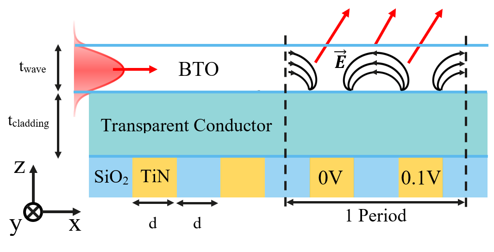
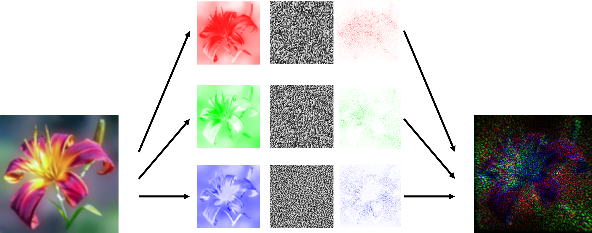
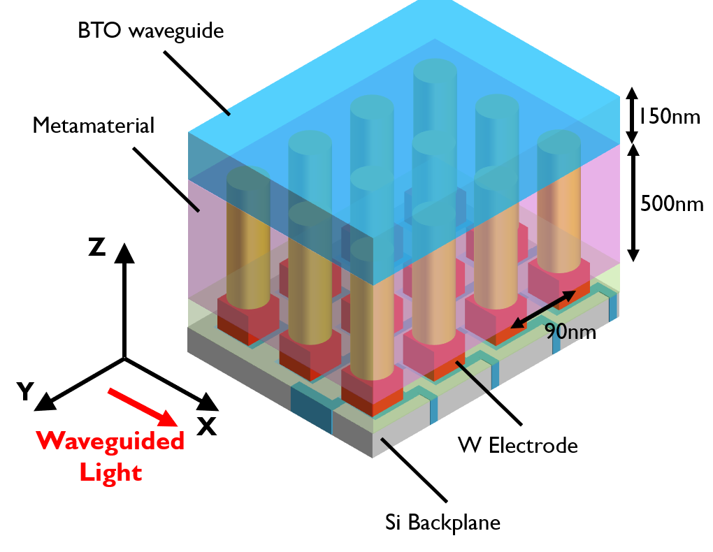

ERC Publications#
The work performed in the ERC project Video Holography has been published in journal papers (see Table 3) and presented at conferences (see Table 4). A more elaborated description of the results can be found in the PhDs that have been supported by this project (see Table 5).
Journal papers#
Tsang-Hsuan Wang, Po-Chun Hsu, Maxim Korytov, Jan Genoe, Clement Merckling, Polarization control of epitaxial barium titanate (BaTiO3) grown by pulsed-laser deposition on a MBE-SrTiO3/Si(001) pseudo-substrate, Journal of Applied Physics 128, 104104 (September 2020), DOI: 10.1063/5.0019980 |
|
Tsang-Hsuan Wang, Robert Gehlhaar, Thierry Conard, Paola Favia, Jan Genoe, Clement Merckling, Interfacial control of SrTiO3/Si(0 0 1) epitaxy and its effect on physical and optical properties, Journal of Crystal Growth 582, 126524 (March 2022), DOI: 10.1016/j.jcrysgro.2022.126524 |
|
|
Guillaume Croes, Renaud Puybaret, Janusz Bogdanowicz, Umberto Celano, Robert Gehlhaar, Jan Genoe, Photonic Metamaterial with a Subwavelength Electrode Pattern, Applied Optics 62,F14 (March 2023), DOI: 10.1364/AO.481396 |
|
Guillaume Croes, Tsang-Hsuan Wang, Robert Gehlhaar, Jan Genoe, Sub-Wavelength Custom Wavefront Shaping by a Non-Linear Electro-Optic Spatial Light Modulator, ACS Photonics 11, pp. 529–536, Feb. 2024, DOI: 10.1021/acsphotonics.3c01401 |
Guillaume Croes, V. Krasnov, Robert Gehlhaar, Jan Genoe, Computer Generated Holography for Waveguide based Holographic Displays, Manuscript in preparation |


Conferences#
Artur Hermans, Robby Janneck, Cedric Rolin, S. Clemmen, Paul Heremans, Jan Genoe, Roel Baets, Growth of Thin Film Organic Crystals with Strong Nonlinearity for On-Chip Second-Order Nonlinear Optics, Proc. IEEE Photonics Benelux Symposium, Brussels, Belgium, November 15-16, 2018. |
|
 |
Guillaume Croes, Nikolay Smolentsev, Tsang-Hsuan Wang, Robert Gehlhaar, Jan Genoe, Non-linear electro-optic modelling of a Barium Titanate grating coupler, Proc. SPIE 11484, 114840D: Optical Modeling and Performance Predictions XI (August 2020), DOI: 10.1117/12.2568032 |
 |
Guillaume Croes, Robert Gehlhaar, Jan Genoe, Hologram Wavefront Shaping by a Non-Linear Electro-Optic Spatial Light Modulator, Holography: Advances and Modern Trends VIII, April 2023, Prague, Czech Republic |
 |
Guillaume Croes, Robert Gehlhaar, Jan Genoe, Sub-Wavelength Custom Reprogrammable Active Photonic Platform for High-Resolution Beam Shaping and Holography, Proc. SPIE PC12196, PC1219619: Active Photonic Platforms, San Diego, California, United States (October 2022) |
Clement Merckling, Islam Ahmed, Tsang-Hsuan Wang, Moloud Kaviani, Jan Genoe, Stefan De Gendt, Integrated Perovskites Oxides on Silicon: From Optical to Quantum Applications, ECS Meeting Abstracts MA2022-01, 1060 , July 2022, DOI: 10.1149/MA2022-01191060mtgabs |
|
Tsang-Hsuan Wang, Robert Gehlhaar, Thierry Conard, Jan Genoe, Clement Merckling, Interface Control and Characterization of SrTiO3/Si(001), Proc. E-MRS-fall, 20th to 23rd September 2021 |
|
Tsang-Hsuan Wang, M. Korytov, P. C. Hsu, Jan Genoe, and Clement Merckling, Single Crystalline BaTiO3 Grown by Pulsed-laser deposition (PLD) on SrTiO3 / Si Pseudo-substrate, in Proc. E-MRS spring, in Advanced functional films grown by pulsed deposition methods. Strasbourg, France, May 2020. Online |
PhD thesis#
|
Tsang-Hsuan Wang, Study of Barium Titanate Epitaxy on Silicon toward Its Application in Video Holography, PhD Thesis, KULeuven, Leuven, Belgium, Monday, February 13, 2023. |
|
Guillaume Croes, Subwavelength Barium Titanate Pockels modulation through transparent conductive oxide nanopillars, Exploring models for hologram construction from evanescent fields, PhD Thesis, KULeuven, Leuven, Belgium, Expected December 2024 |